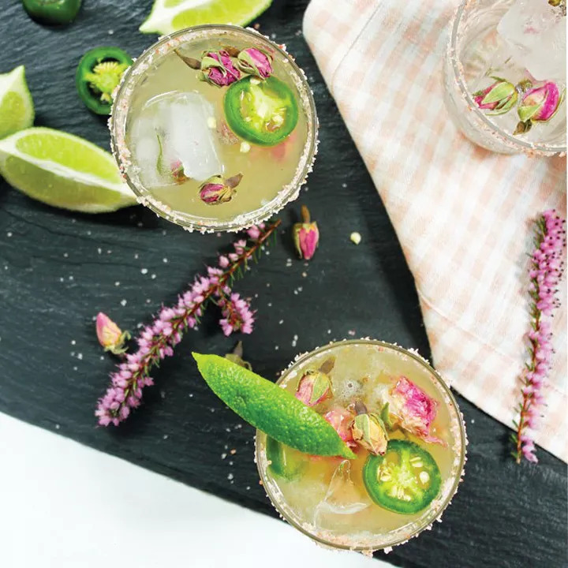

Relaxin Jackson Cocktail

Description
A more sophisticated spicy margarita that balances heat from ginger and jalapeño with fresh citrus notes. Using classic ingredients like jalapeño and lime and more unusual 'rita ingredients like ginger syrup and rosewater, the Rosa Picante packs a well-rounded amount of heat.
For those that prefer a more spicy sophistication.
Ingredients
- Patron Tequila, 2 oz
- Patron Citronge, .5 oz
- Lime Juice, fresh 1 oz
- Jalapeno Oil , 1 barspoon
- Rose Water (Food Grade), 1 dash
- Ice cubes
- (optional) Jalapeno, sliced
- (optional) Rose sea salt
- (optional) Taijin seasoning
- (optional) Rose buds or petals
- (optional) Lime wedge
Steps
- Fill bar shaker 3/4 full of ice.
- Combine Tequila, Triple-Sec, Lime Juice, jalapeño oil, and rose water in shaker. Shake until oil appears to be completely emulsified in mix.
- Rim a cocktail glass with a 50/50 mix of Taijin and rose sea salt.
- Pour contents of shaker into cocktail glass. A thin float of oil should appear at the top within 5 minutes. This allows the heat to be present on every sip.
- Garnish with rose petal/bud, lime wedge, and sliced Jalapeno